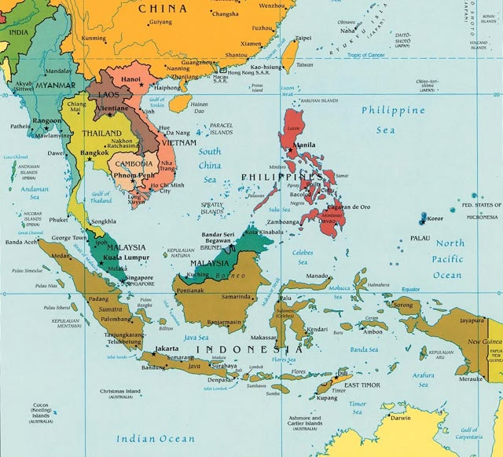

PENJELAJAHAN ASEAN
Ayo Menjelajahi Asia Tenggara!
Yuk, kenali negara-negara, budaya, dan sejarah yang ada di Asia Tenggara!
MULAI MENJELAJAH
Pilih Petualanganmu!
Ketuk salah satu kartu di bawah untuk memulai perjalananmu.

Ayo Menjelajahi Asia Tenggara!
Yuk, kenali negara-negara, budaya, dan sejarah yang ada di Asia Tenggara!
MULAI MENJELAJAH
Ketuk salah satu kartu di bawah untuk memulai perjalananmu.